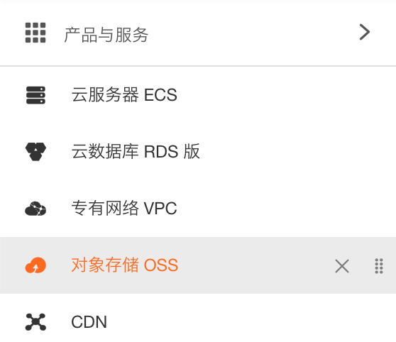
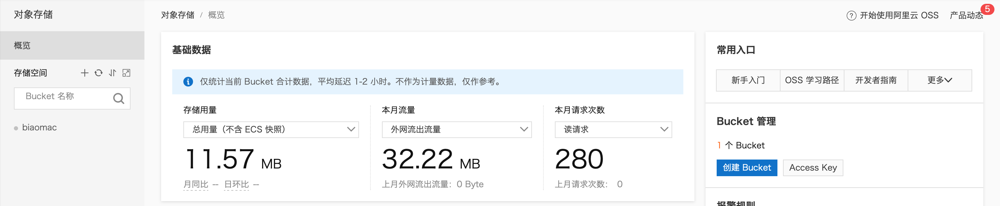
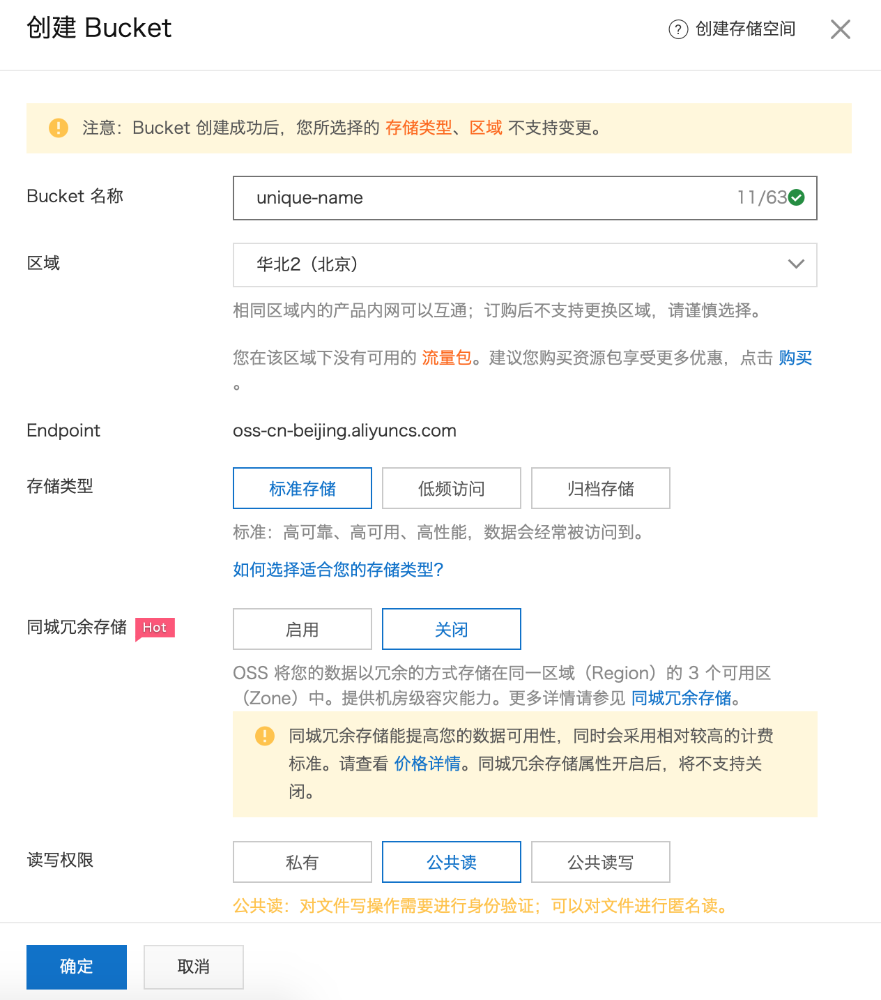
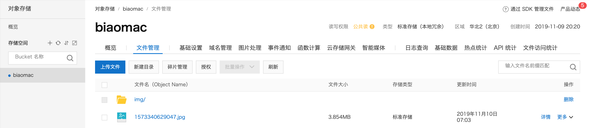
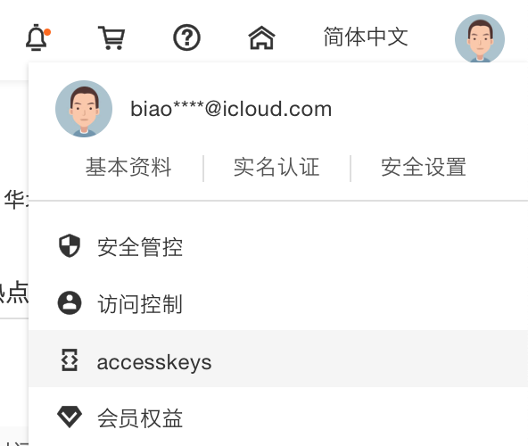
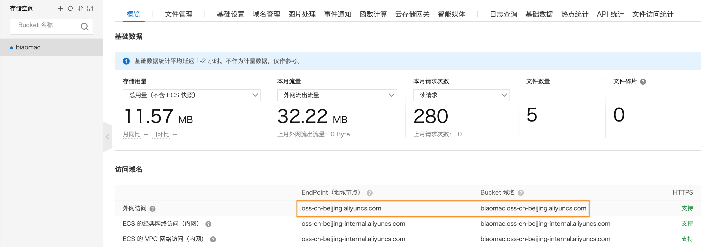

使用阿里云 OSS 存储图片:
- 注册阿里云账号
- 到控制台开通 OSS 服务 (一个月 40 G，1 元)
- 创建 Bucket
- 在 Bucket 里管理文件
- 使用 API 上传图片
创建 Bucket
Bucket 是文件存储的空间，简单的理解为 Windows 的 C 盘，D 盘。在控制台菜单中选择对象存储 OSS，然后创建 Bucket:


为了简单起见，创建 Bucket 时选择了标准存储、公共读:

在 Bucket 里管理文件
点击文件管理，在这里上传文件、删除文件、获取文件的 URL 等:

使用 API 上传图片
为了使用程序进行上传，需要创建 Access Keys, 了解 Endpoint 和 Bucket 的域名。
为了创建 Access Keys，把鼠标放到右上角用户头像上，点击 accessKeys 进行获取:

Endpoint 为 Bucket 概览中的地域节点，Bucket 中文件的 URL 为 Bucket 域名 + 文件在 Bucket 的路径，参考下图进行获取:

Java 上传图片
阿里提供了相关的文档帮助开发: 上传文档、简单上传。下面给出的代码为上传本地图片到 OSS:
添加 Gradle 依赖:
1
| implementation "com.aliyun.oss:aliyun-sdk-oss:3.7.0"
|
1
2
3
4
5
6
7
8
9
10
11
12
13
14
15
16
17
18
19
20
21
22
23
24
25
26
27
28
29
30
31
32
33
34
35
36
37
38
39
40
41
42
43
44
| import com.alibaba.fastjson.JSON;
import com.aliyun.oss.OSS;
import com.aliyun.oss.OSSClientBuilder;
import com.aliyun.oss.model.PutObjectRequest;
import com.aliyun.oss.model.PutObjectResult;
import java.io.File;
import java.io.FileNotFoundException;
public class AliOss {
public static void main(String[] args) throws FileNotFoundException {
long start = System.currentTimeMillis();
System.out.println("Start: " + start);
String endpoint = "oss-cn-beijing.aliyuncs.com";
String accessKeyId = "xxx";
String accessKeySecret = "xxx";
OSS ossClient = new OSSClientBuilder().build(endpoint, accessKeyId, accessKeySecret);
String bucketName = "biaomac";
String filePath = "avatar/tear.jpg";
File localFile = new File("/Users/Biao/Pictures/tear.jpg");
PutObjectRequest putObjectRequest = new PutObjectRequest(bucketName, filePath, localFile);
PutObjectResult result = ossClient.putObject(putObjectRequest);
System.out.println(JSON.toJSONString(result, true));
ossClient.shutdown();
String url = "https://biaomac.oss-cn-beijing.aliyuncs.com/" + filePath;
System.out.println(url);
System.out.println("End: " + (System.currentTimeMillis() - start));
}
}
|
PHP 上传图片
阿里提供了相关的文档帮助开发: PHP 文档。
进行 PHP 开发，首先需要安装 SDK，访问 aliyun-oss-php-sdk 下载 zip 包，然后参考下面的代码修改 index.php:
1
2
3
4
5
6
7
8
9
10
11
12
13
14
15
16
17
18
19
| <?php
require_once __DIR__ . '/autoload.php';
use OSS\OssClient;
use OSS\Core\OssException;
$endpoint = 'oss-cn-beijing.aliyuncs.com';
$accessKeyId = 'xxx';
$accessKeySecret = 'xxx';
try {
$ossClient = new OssClient($accessKeyId, $accessKeySecret, $endpoint);
$content = file_get_contents('/Users/Biao/Pictures/storm.jpg');
$options = array();
$ossClient->putObject('biaomac', 'img/1.jpg', $content, $options);
} catch (OssException $e) {
print $e->getMessage();
}
?>
|